純凝態相與氣相的反應
章節預覽
第十二章是材料熱力學從「理論建構」邁向「工業應用」的關鍵橋樑。前十一章建立了熱力學三大定律、自由能、化學勢與氣相反應平衡的理論框架；本章將這些工具精準地應用於冶金工業中最核心的反應類型：純固體（或純液體）與氣體之間的反應。這類反應涵蓋了從鐵礦石在高爐中被碳還原（熔煉），到鋁在電解槽中從氧化鋁析出，乃至於太空梭固態火箭推進劑中鋁粉的燃燒——它們的共同特徵是至少有一個反應物或產物為純凝態相，其化學活性恆為 1。
當純固體或純液體的活性 $a = 1$ 時，平衡常數 $K$ 的表達式將大幅簡化，平衡條件直接對應於一個特定的氣體分壓——稱為平衡氧分壓 $P_{\mathrm{O}_2}^{\text{eq}}$。這個看似簡單的結論，實際上構成了整部「高溫冶金物理化學」的基石。透過計算不同溫度下的 $\Delta G^\circ(T)$，並將其繪製成艾林漢圖（Ellingham diagram），我們可以在一張圖上直觀地比較數十種金屬氧化物的相對穩定性、判斷某一金屬能否還原另一金屬的氧化物，以及理解為何碳在室溫下是弱的還原劑，卻在鼓風爐的 2000 K 高溫中成為最強大的還原劑。
本章的學習路徑是循序漸進的：首先（§12.1–12.2）建立純凝態相反應平衡的數學形式；其次（§12.3）利用克希荷夫定律與熱容數據計算 $\Delta G^\circ$ 對溫度的函數依賴關係；接著（§12.4）介紹整章最核心的工具——艾林漢圖，討論其斜率、截距、相變斷點與氧化物的穩定度排序；然後（§12.5）處理相變化（熔化、沸騰、同素異形轉變）對艾林漢線的影響；最後（§12.6–12.7）深入碳-氧-金屬三元系統，探討布多反應（Boudouard reaction）及金屬–碳–氧穩定域圖。全章貫穿的主旋律是：熱力學數據如何直接指導工業冶金過程的設計與優化。
12.1–12.2 純凝態相反應平衡
考慮一般的氧化反應：$2\mathrm{M}(s) + \mathrm{O}_2(g) \rightleftharpoons 2\mathrm{MO}(s)$，其中金屬 M 及其氧化物 MO 均為純固體。根據第十一章的反應平衡通式，平衡常數為 $K = \dfrac{a_{\mathrm{MO}}^2}{a_{\mathrm{M}}^2 \cdot (P_{\mathrm{O}_2}/P^\circ)}$。純固體的活性定義為 $a = 1$（以純物質在相同溫度與 1 atm 壓力下的狀態為標準態），因此分子與分母中的活性項均消去，得到一個極其簡潔的關係式：
📐 推導：從反應平衡到 $\Delta G^\circ = RT\ln(P_{\mathrm{O}_2}/P^\circ)$
對反應 $2\mathrm{M}(s) + \mathrm{O}_2(g) \rightleftharpoons 2\mathrm{MO}(s)$，平衡常數定義為各物質活性的乘積比：
純固體在其標準態（同溫度、1 atm）下的活性定義為 $a = 1$。因此 $a_{\mathrm{M}} = 1$，$a_{\mathrm{MO}} = 1$。
上式表示：標準自由能變化 $\Delta G^\circ$ 唯一地對應於一個特定的平衡氧分壓。當實際氧分壓等於此值時，系統處於平衡（$\Delta G = 0$）；高於此值則金屬氧化，低於此值則氧化物分解。反解得到平衡氧分壓：
這條公式的物理意涵深遠：對於涉及純凝態相的氧化反應，標準自由能變化 $\Delta G^\circ$ 唯一地決定了系統的平衡氧分壓。若周圍大氣中的氧分壓高於此平衡值，金屬將自發地被氧化；若低於此值，氧化物將自發地分解（還原）為金屬。因此每一種金屬–氧化物對在給定溫度下都具有一個「特徵分解氧壓」，這個數值即是該氧化物熱力學穩定度的定量度量：特徵分解氧壓愈低，氧化物愈穩定。
以鐵的氧化為例來說明：反應 $2\mathrm{Fe}(s) + \mathrm{O}_2(g) \rightleftharpoons 2\mathrm{FeO}(s)$ 在 1000 K 時的 $\Delta G^\circ \approx -400\ \mathrm{kJ/mol}$（每莫耳 O₂），代入上式可得 $P_{\mathrm{O}_2}^{\text{eq}} / P^\circ \approx \exp(-400000 / (8.314 \times 1000)) \approx 10^{-21}$。這個數字極其微小——平衡氧分壓低至 $10^{-21}$ atm 量級，意味著即使在極度還原性的氣氛中（例如高爐內部），FeO 仍然傾向於穩定存在。相比之下，$\mathrm{Cu}_2\mathrm{O}$ 在相同溫度下的平衡氧分壓約為 $10^{-6}$ atm，高出十五個數量級，反映氧化銅遠不如氧化鐵穩定。正是這種平衡氧分壓的巨大差異，使得選擇性氧化與還原成為可能的冶金分離手段。
此處需要特別注意一個常見的陷阱：平衡常數 $K$ 的數值取決於化學反應方程式的書寫方式。若將鐵氧化反應寫為 $\mathrm{Fe}(s) + \frac{1}{2}\mathrm{O}_2(g) \rightleftharpoons \mathrm{FeO}(s)$，則 $K = 1/(P_{\mathrm{O}_2}/P^\circ)^{1/2}$，$\Delta G^\circ$ 的數值也相應減半。Gaskell 在本節中反覆強調，在引用文獻中的 $\Delta G^\circ$ 數據時，必須確認其對應的反應計量係數。為避免混淆，本章後續討論均以「每莫耳 O₂」為基準來表達 $\Delta G^\circ$。
另一個重要的延伸是多個凝態相共存的情況。當金屬 M 與其氧化物 MO 並非以純態存在，而是形成固溶體或中間相時，活性不再為 1，平衡氧分壓將隨組成而連續變化。這正是第十章相圖與本章氣-固平衡之間的深層連結：相圖告訴我們在給定溫度與組成下哪些相是穩定的，而艾林漢圖則告訴我們這些相與特定氣相組成之間的平衡關係。在後續 §12.7 中，我們將看到如何將這兩種資訊整合為二維的穩定域圖（predominance area diagram）。
| 金屬氧化物 | 反應（每莫耳 O₂） | $\Delta G^\circ$ 在 1000 K (kJ/mol O₂) | $P_{\mathrm{O}_2}^{\text{eq}} / P^\circ$ 在 1000 K |
|---|---|---|---|
| CaO | $2\mathrm{Ca} + \mathrm{O}_2 \rightleftharpoons 2\mathrm{CaO}$ | −1140 | $\sim 10^{-60}$ |
| MgO | $2\mathrm{Mg} + \mathrm{O}_2 \rightleftharpoons 2\mathrm{MgO}$ | −1080 | $\sim 10^{-57}$ |
| Al₂O₃ | $\frac{4}{3}\mathrm{Al} + \mathrm{O}_2 \rightleftharpoons \frac{2}{3}\mathrm{Al}_2\mathrm{O}_3$ | −960 | $\sim 10^{-50}$ |
| SiO₂ | $\mathrm{Si} + \mathrm{O}_2 \rightleftharpoons \mathrm{SiO}_2$ | −740 | $\sim 10^{-39}$ |
| FeO | $2\mathrm{Fe} + \mathrm{O}_2 \rightleftharpoons 2\mathrm{FeO}$ | −400 | $\sim 10^{-21}$ |
| NiO | $2\mathrm{Ni} + \mathrm{O}_2 \rightleftharpoons 2\mathrm{NiO}$ | −320 | $\sim 10^{-17}$ |
| Cu₂O | $4\mathrm{Cu} + \mathrm{O}_2 \rightleftharpoons 2\mathrm{Cu}_2\mathrm{O}$ | −220 | $\sim 10^{-12}$ |
| Ag₂O | $4\mathrm{Ag} + \mathrm{O}_2 \rightleftharpoons 2\mathrm{Ag}_2\mathrm{O}$ | +30 | $\sim 10^{+2}$ |
▲ 表一：代表性金屬氧化物在 1000 K 的 $\Delta G^\circ$ 與平衡氧分壓。注意 Ag₂O 的 $\Delta G^\circ$ 為正值，表示在該溫度下 Ag₂O 相對於 Ag + O₂ 不穩定——實際上 Ag₂O 在約 460 K 以上即會分解。
12.3 $\Delta G^\circ$ 隨溫度的變化
要建構艾林漢圖，我們需要知道 $\Delta G^\circ(T)$ 在寬廣溫度範圍內的函數形式。根據第六章的克希荷夫定律（Kirchhoff's Law），反應的標準焓變化對溫度的導數等於產物與反應物熱容之差：
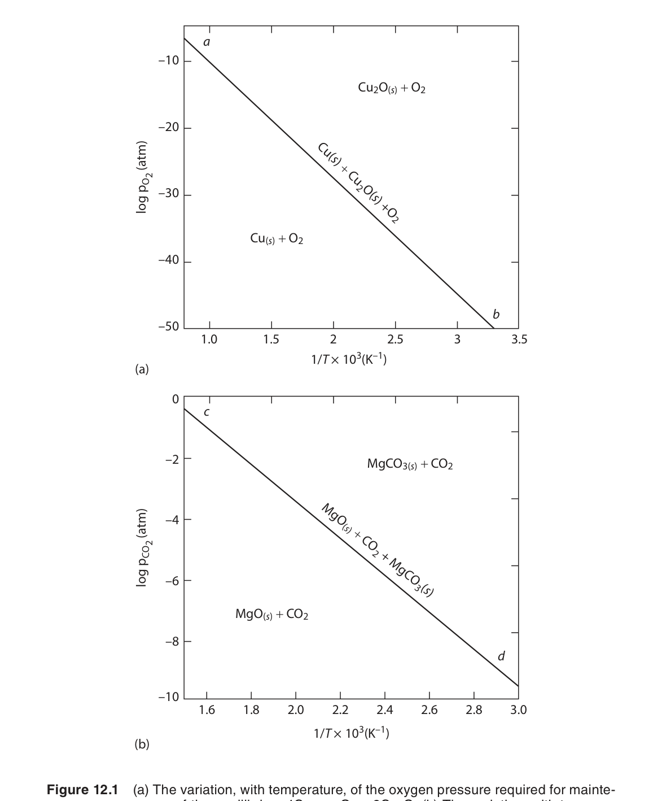
同理，標準熵變化對溫度的導數為 $\Delta C_p / T$。將兩者積分，並代入 $\Delta G^\circ = \Delta H^\circ - T\Delta S^\circ$，可以得到 $\Delta G^\circ(T)$ 的完整表達式：
在實際應用中，熱容 $C_p$ 通常以冪級數形式擬合：$C_p = a + bT + cT^{-2}$。Gaskell 在書末附錄中提供了數十種物質的 $a, b, c$ 參數，讀者可以代入上述積分公式計算任意溫度下的 $\Delta G^\circ$。然而，對於本章的核心目的——定性理解艾林漢圖的趨勢——我們可以採用一個極佳的近似：在沒有相變化的溫度區間內，$\Delta C_p$ 通常很小（因為產物與反應物的熱容大致相近，特別是涉及固態金屬與其固態氧化物的反應），因此 $\Delta G^\circ(T)$ 近似為溫度的線性函數：
這正是艾林漢圖中每一條線都接近直線的根本原因。直線的截距近似反應的 $\Delta H^\circ$，而直線的斜率則為 $-\Delta S^\circ$。對於金屬氧化反應 $2\mathrm{M}(s) + \mathrm{O}_2(g) \rightleftharpoons 2\mathrm{MO}(s)$，氣體莫耳數由 1 減為 0（氧氣被「固定」在固體氧化物晶格中），系統的無序度大幅降低，因此 $\Delta S^\circ$ 為一個大的負值（約 −150 至 −200 J/K·mol O₂）。這使得大多數金屬氧化反應的艾林漢線具有正斜率——溫度愈高，$\Delta G^\circ$ 愈趨近於零（氧化物的穩定性降低）。
此處值得反思一個更深層的物理圖像：為什麼高溫不利於氧化物穩定？從熵的角度看，氧氣分子具有三個平移自由度，在固態氧化物中這些自由度被凍結為晶格振動模式（聲子）。溫度愈高，氣態 O₂ 的平移熵（$TS$ 項）貢獻愈大，使得氣態反應物側的自由能相對於固態產物側愈來愈有利。換言之，高溫「解放」了氧氣的平移熵，使得氧化物傾向於分解。這與勒沙特列原理（Le Chatelier's principle）的預測完全一致：對於放熱且氣體莫耳數減少的反應，升溫將使平衡向吸熱方向（即分解方向）移動。
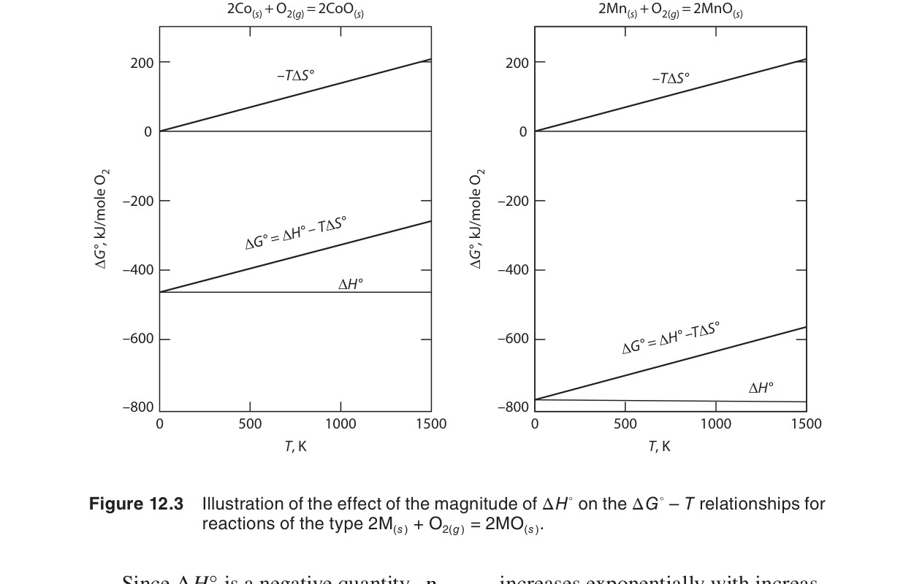
12.4 艾林漢圖（Ellingham Diagram）
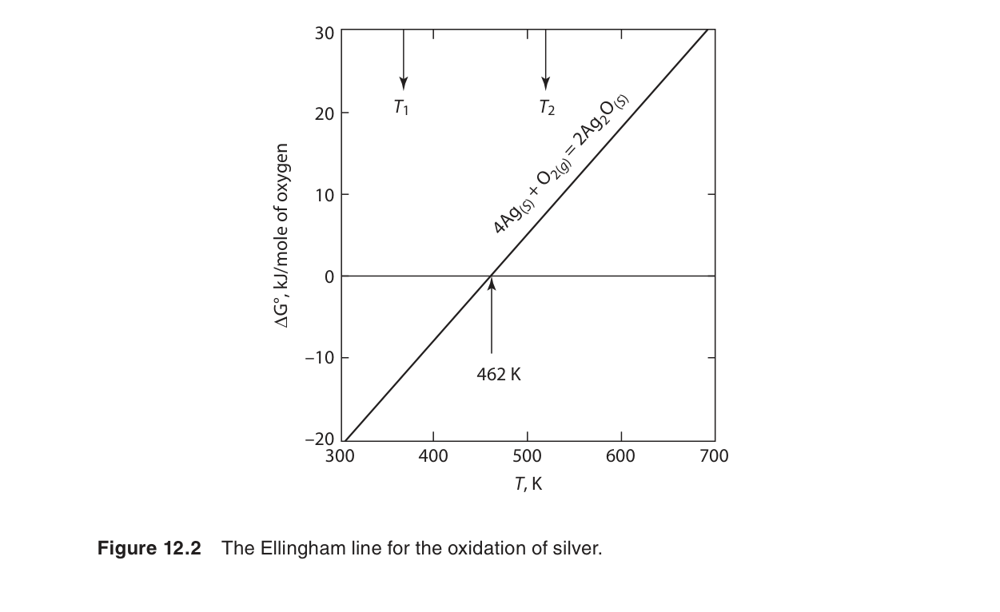
艾林漢圖是材料熱力學中最具視覺震撼力與實用價值的工具之一。1944 年，英國冶金學家 Harold Ellingham 提出將各種氧化物的 $\Delta G^\circ$ 對溫度作圖，將數十條線繪製在同一張坐標軸上。這張圖自此成為冶金工程師的「羅塞塔石碑」——只需一瞥，即可判斷任何金屬氧化物的相對穩定性、預測還原反應的可行性、估算所需的操作溫度範圍。本節將分三個層次深入剖析艾林漢圖：圖形特徵與斜率的物理意義、氧化物穩定度排序的法則，以及碳的特殊角色。
圖形特徵與斜率的物理意義
艾林漢圖的縱軸為 $\Delta G^\circ$（單位：kJ/mol O₂），橫軸為溫度（單位：K 或 °C）。圖中的每條線對應一個特定的氧化反應。如前節所述，在沒有相變化的區間內，線段近似為直線，其斜率由 $-\Delta S^\circ$ 決定。由於金屬氧化反應的 $\Delta S^\circ$ 高度為負值（氧氣被消耗），絕大多數氧化反應的艾林漢線呈現正斜率，向右上方攀升。斜率的大小反映了反應熵變的絕對值：$\Delta S^\circ$ 愈負（氣體消失愈多），線的斜率愈大。
📐 推導：艾林漢線斜率 $= -\Delta S^\circ$ 的由來
吉布斯自由能的定義為 $G = H - TS$，對一個反應取差值：
在固定壓力下對 $T$ 微分，使用乘積法則：
根據克希荷夫定律：$d(\Delta H^\circ)/dT = \Delta C_p$，且 $d(\Delta S^\circ)/dT = \Delta C_p/T$。代入上式：
$\Delta C_p$ 項恰好相消！
無論 $\Delta C_p$ 是否為零，$\Delta G^\circ$ 對 $T$ 的導數恆等於 $-\Delta S^\circ$。這是熱力學中一個極其優雅的嚴格結果——並非近似。因此艾林漢線在任意溫度下的切線斜率即為該溫度下反應的 $-\Delta S^\circ(T)$。對於金屬氧化反應，$\Delta S^\circ$ 為大的負值（約 −150 至 −200 J/K·mol O₂），因此斜率為正值，線向右上方攀升。
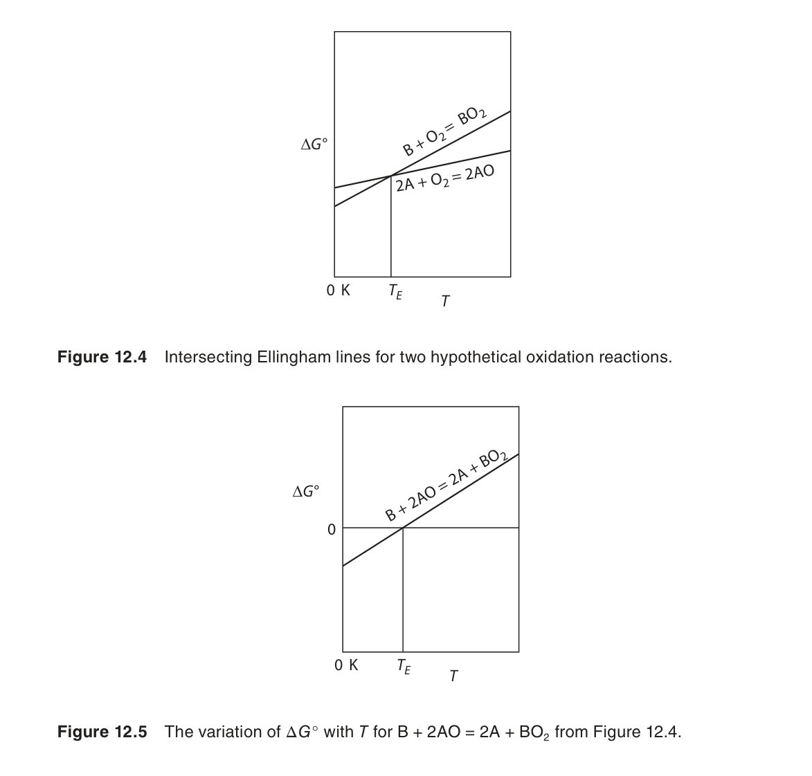
然而，碳的氧化反應是一個引人注目的例外。考慮以下兩個反應：
第一個反應（C → CO₂）的氣體莫耳數不變（1:1），$\Delta S^\circ \approx 0$，因此其艾林漢線幾乎水平。第二個反應（C → CO）的氣體莫耳數由 1 增加為 2，$\Delta S^\circ$ 為正值，其艾林漢線呈現罕見的負斜率——溫度愈高，$\Delta G^\circ$ 愈負，碳的還原能力愈強。正是這條向下傾斜的 CO 線，賦予了碳在高溫冶金中不可取代的地位：在足夠高的溫度下，C → CO 的線將與幾乎所有金屬氧化物的線相交，交點以上的溫度範圍內，碳即可自發地將該金屬氧化物還原為金屬。
氧化物穩定度排序與還原法則
艾林漢圖最直接也最重要的用途是比較不同氧化物的相對穩定性：在任一給定溫度下，位置愈低的線對應的氧化物愈穩定。這是因為 $\Delta G^\circ$ 愈負，反應 $x\mathrm{M} + \mathrm{O}_2 \rightarrow \mathrm{M}_x\mathrm{O}_2$ 的自發趨勢愈強，該氧化物愈難以被分解。因此，在 1000 K 時，CaO 的線位於圖的最底部（$\Delta G^\circ \approx -1140$ kJ/mol），而 Ag₂O 的線位於圖的最上方（$\Delta G^\circ \approx +30$ kJ/mol），前者是極度穩定的耐火氧化物，後者在該溫度下甚至無法穩定存在。
這條「位置法則」直接導出冶金學中最重要的還原判斷準則：艾林漢圖上位於下方的金屬，可以還原位於其上方的任何金屬的氧化物。以鋁熱反應（thermite reaction）為例：Al 的氧化線位於 Fe 的氧化線之下（Al₂O₃ 比 FeO 更穩定），因此 $\frac{4}{3}\mathrm{Al} + \frac{2}{3}\mathrm{Fe}_2\mathrm{O}_3 \rightarrow \frac{2}{3}\mathrm{Al}_2\mathrm{O}_3 + \frac{4}{3}\mathrm{Fe}$ 的反應具有負的 $\Delta G$——鋁可以將氧化鐵還原為金屬鐵，同時自身被氧化為氧化鋁。這正是鋁熱焊接的熱力學原理，反應釋放的巨大熱量甚至足以熔化鐵，使焊接在高溫下完成。
更進一步，我們可以從艾林漢圖推導出選擇性還原的策略。假設礦石中含有 Fe₂O₃ 與 SiO₂ 兩種氧化物雜質，我們希望將鐵還原為金屬態，但保留矽為氧化物形態（作為爐渣）。在艾林漢圖上，FeO 的線位於 SiO₂ 的線之上（SiO₂ 更穩定），因此我們只需將系統的「有效還原勢」控制在剛剛足以還原 FeO 但不足以還原 SiO₂ 的水平——這通常透過調節爐內的 CO/CO₂ 比例來實現。這種微妙的平衡操作正是現代煉鋼過程中「吹氧脫碳保鉻」等工藝的理論基礎。
碳作為還原劑的獨特角色
在所有可能的還原劑中，碳（以焦炭形式）在工業冶金中佔據了無可匹敵的主導地位，這絕非巧合而是熱力學的必然。從艾林漢圖上可以清晰看出碳的雙重身分：(1) 在低溫區（< 700°C），碳主要氧化為 CO₂，其艾林漢線幾乎水平，處於圖的中間位置，還原能力平平；(2) 在高溫區（> 700°C），碳氧化為 CO 的反應在熱力學上愈來愈有利，其負斜率的線最終穿越了幾乎所有常見金屬氧化物的線。C → CO 的線與 FeO 線的交點約在 710°C，與 Cr₂O₃ 線的交點約在 1250°C，與 MnO 線的交點約在 1420°C——這些溫度分別對應於高爐煉鐵、鉻鐵合金冶煉與錳鐵合金冶煉的最低操作溫度。
碳之所以成為「終極還原劑」，還有兩個現實層面的原因：(a) 自然界中碳（煤、焦炭）蘊藏豐富且價格低廉，遠比使用鋁、鎂或矽作為還原劑經濟；(b) 碳還原金屬氧化物後的產物是 CO 或 CO₂ 氣體，它們會自動離開反應區（作為高爐煤氣排出），不會污染產物金屬，也不需要在後續工序中進行分離。相比之下，若使用鋁作為還原劑，產物 Al₂O₃ 是高熔點固體，會與金屬混合而需要額外的分離步驟。正是這些熱力學、經濟學與製程工程學的綜合優勢，使得碳在高溫冶金中的霸主地位延續了超過三千年。
諾莫圖刻度：從 $\Delta G^\circ$ 讀取氧分壓
艾林漢圖最巧妙的設計之一，是其右側（或周圍）附加的諾莫圖（nomographic）氧分壓刻度。這個刻度的原理基於 $\Delta G^\circ = RT\ln(P_{\mathrm{O}_2}/P^\circ)$：對於任何給定的 $\Delta G^\circ$ 與 $T$，可以在圖上讀出對應的平衡氧分壓。
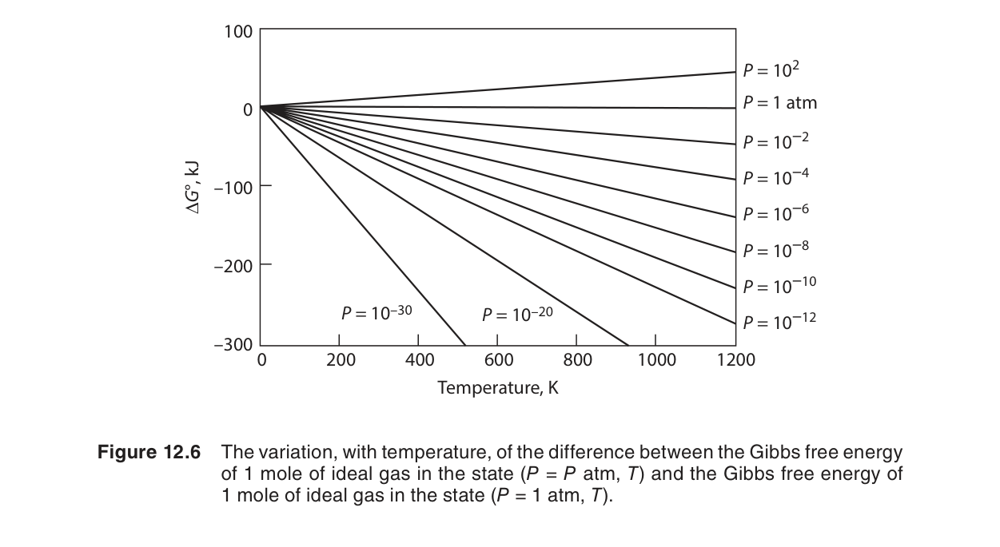
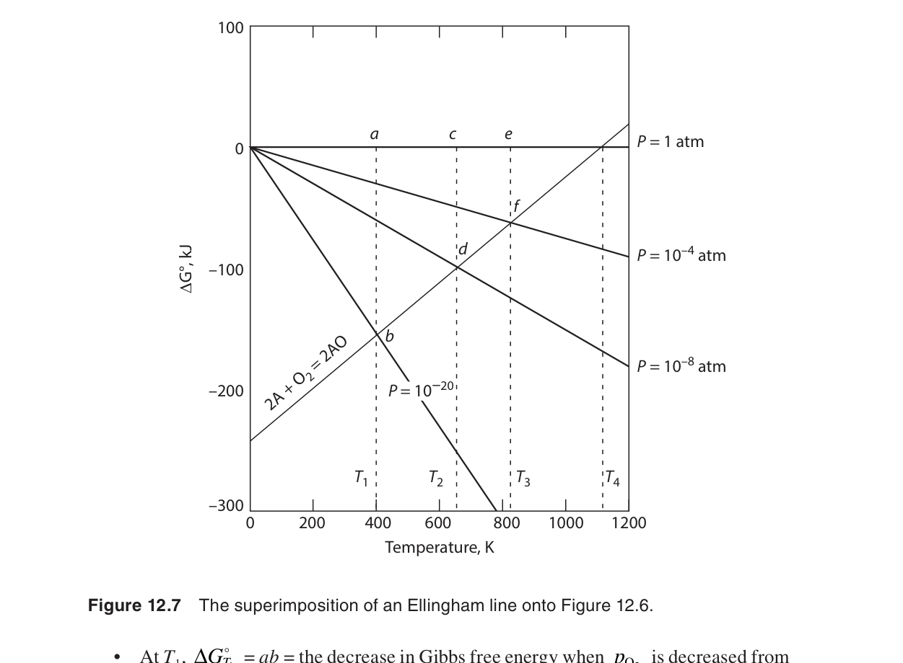
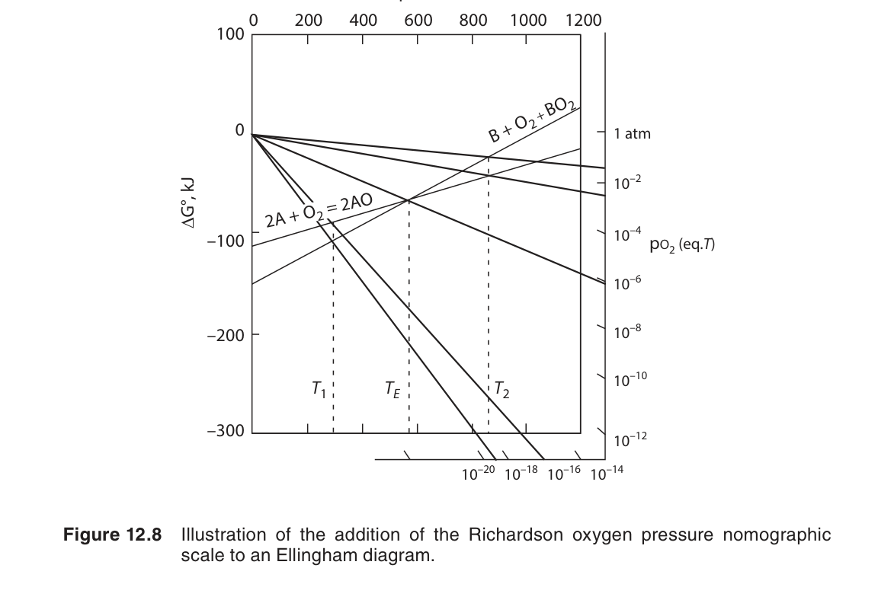
📐 推導：如何使用諾莫圖氧分壓刻度（三點共線法）
對於純凝態相氧化反應，平衡條件為：
重整為：$\displaystyle \frac{\Delta G^\circ(T)}{RT} = \ln\!\left(\frac{P_{\mathrm{O}_2}}{P^\circ}\right)$
艾林漢圖的縱軸為 $\Delta G^\circ$，橫軸為 $T$。對於一個固定的 $P_{\mathrm{O}_2}$ 值，$\Delta G^\circ(T) = RT\ln(P_{\mathrm{O}_2}/P^\circ)$ 是一條通過原點（$T = 0, \Delta G^\circ = 0$）的直線，其斜率為 $R\ln(P_{\mathrm{O}_2}/P^\circ)$。
因此：在 $\Delta G^\circ$–$T$ 坐標中，所有對應同一 $P_{\mathrm{O}_2}$ 的點都落在從原點出發的一條輻射線上。
步驟 A：在圖上找到原點 O（$T = 0$ K, $\Delta G^\circ = 0$）。
步驟 B：在目標反應的艾林漢線上找到感興趣的溫度點 P（例如 1000 K 處的點）。
步驟 C：用直尺連接 O 與 P，並延長此直線至圖右側的 $P_{\mathrm{O}_2}$ 刻度。
步驟 D：讀取延長線與 $P_{\mathrm{O}_2}$ 刻度的交點——此即為該反應在該溫度下的平衡氧分壓。
O–P 直線的斜率為 $\Delta G^\circ(T) / T = R\ln(P_{\mathrm{O}_2}/P^\circ)$。此斜率直接對應於右側刻度上的 $P_{\mathrm{O}_2}$ 值——刻度是根據 $P_{\mathrm{O}_2}/P^\circ = \exp(\text{斜率}/R)$ 來標定的。
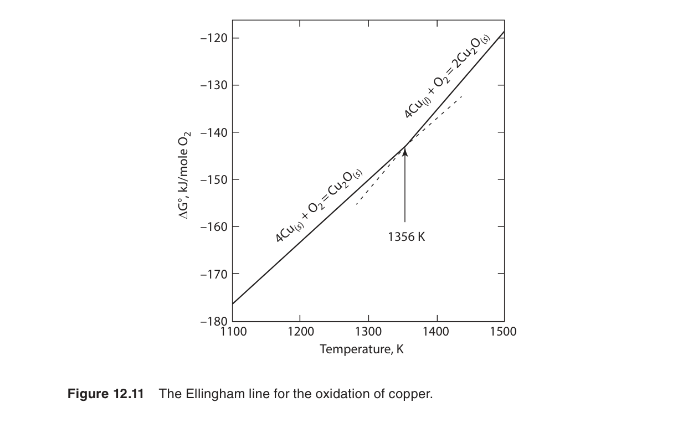
12.5 相變化的影響
艾林漢圖中的線並非在整個溫度範圍內都是平滑的直線——每當反應物或產物發生相變化（熔化、汽化、或同素異形轉變），線的斜率就會出現明顯的轉折。這是因為相變伴隨著焓與熵的不連續變化（$\Delta H_{\text{tr}}$ 與 $\Delta S_{\text{tr}} = \Delta H_{\text{tr}}/T_{\text{tr}}$），從而在 $\Delta G^\circ(T)$ 函數中引入一個「扭結」（kink）。相變前後，艾林漢線的斜率變化量等於 $-\Delta S_{\text{tr}}$。理解這些轉折的位置與大小，對於精確使用艾林漢圖進行定量預測至關重要。
以金屬鋅的氧化為例來說明：在 693 K（鋅的熔點）以下，反應為 $2\mathrm{Zn}(s) + \mathrm{O}_2(g) \rightleftharpoons 2\mathrm{ZnO}(s)$。在 693 K 處，鋅熔化：$\mathrm{Zn}(s) \rightarrow \mathrm{Zn}(l)$，$\Delta H_{\text{m}} = 7.32\ \mathrm{kJ/mol}$，$\Delta S_{\text{m}} = 10.56\ \mathrm{J/K\cdot mol}$。熔化後反應變為 $2\mathrm{Zn}(l) + \mathrm{O}_2(g) \rightleftharpoons 2\mathrm{ZnO}(s)$。由於液態鋅的熵高於固態鋅（液體具有更高的無序度），反應物側的熵增加，使得整體反應的 $\Delta S^\circ$ 變得更負（數值更小，即絕對值更大）。因此，在熔點以上，艾林漢線的斜率會變得更陡（更正）——溫度對 $\Delta G^\circ$ 的削弱作用更顯著。
同樣的邏輯適用於氧化物的相變。當 MgO 在高溫下熔化時（熔點 3098 K），產物側的熵增加，反應的 $\Delta S^\circ$ 變得不那麼負，艾林漢線在氧化物熔點處的斜率會減小（變得更平緩）。如果金屬與氧化物同時發生相變，則需要將兩者的熵變效應疊加。Gaskell 在本節中提供了一個系統性的方法：將整個溫度範圍按照相變點劃分為數個區間，在每個區間內分別使用對應相態的熱力學數據進行 $\Delta G^\circ$ 計算。對於現代計算熱力學而言，這個過程可以透過 CALPHAD 方法自動化——該方法將每個相的 Gibbs 自由能表示為溫度、壓力與組成的函數，並在給定條件下尋找全域最小值，從而自動處理相變邊界。
鐵的相變是艾林漢圖中最具實際重要性的例子之一。鐵在 1184 K 發生 $\alpha$-Fe (BCC) → $\gamma$-Fe (FCC) 的相變，在 1667 K 發生 $\gamma$-Fe → $\delta$-Fe (BCC) 的相變，在 1809 K 熔化。每一次相變都會在鐵的氧化線（以及鐵氧化物的還原線）上留下斜率變化的印記。特別值得注意的是，在 $\alpha$ → $\gamma$ 轉變處，$\gamma$-Fe 的熵略低於 $\alpha$-Fe（FCC 結構較 BCC 結構更為緊密），因此反應物側的熵減少，反應的 $\Delta S^\circ$ 變得不那麼負，艾林漢線的斜率在此處略微減小。這些看似微小的斜率變化，在精確計算高爐內部不同溫度區域的平衡氣體組成時卻可能有關鍵性的影響。
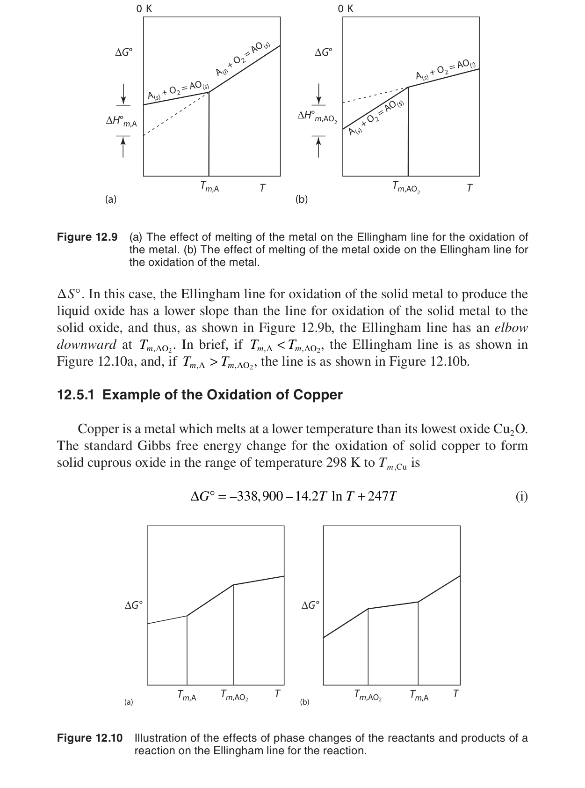
| 金屬 | 熔點 (K) | $\Delta H_m$ (kJ/mol) | 熔化對艾林漢線斜率的影響 | 備註 |
|---|---|---|---|---|
| Zn | 693 | 7.32 | 斜率增大（更陡） | 液態 Zn 還原能力稍弱於固態 Zn |
| Pb | 600 | 4.77 | 斜率略微增大 | 影響較小 |
| Fe | 1809 | 13.81 | 斜率增大 | 另有 $\alpha/\gamma/\delta$ 固態相變 |
| Ni | 1728 | 17.48 | 斜率增大 | NiO 熔點 2228 K，金屬先熔 |
| Cu | 1358 | 13.26 | 斜率增大 | Cu₂O 熔點 1508 K，兩者溫度接近 |
▲ 表二：代表性金屬的熔點與其對艾林漢線斜率的影響。斜率變化量 $= -\Delta S_m$（金屬熔化使反應物熵增加，$\Delta S^\circ$ 更負，斜率更正）。
12.6 碳的氧化物：CO/CO₂ 平衡
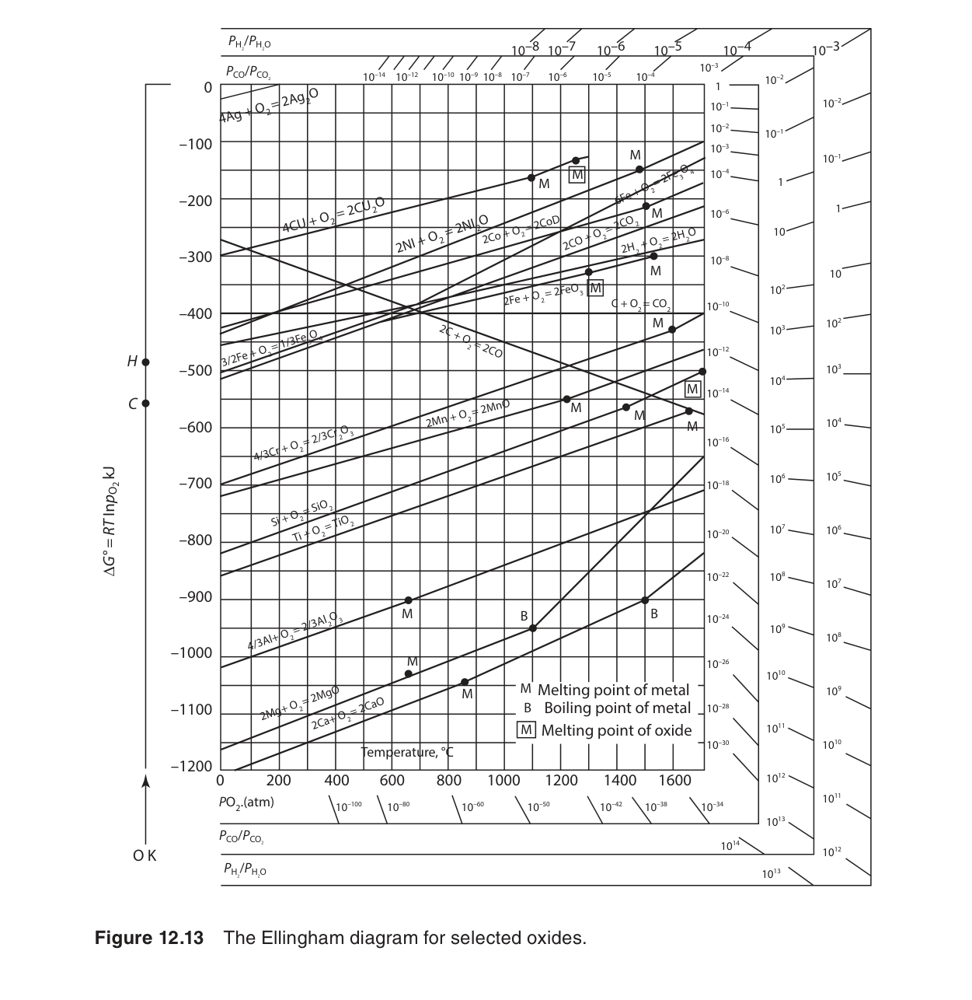
碳在冶金過程中不僅是還原劑，其氧化產物 CO 與 CO₂ 的相對比例還決定了爐內氣相的「氧化還原電位」。CO 與 CO₂ 之間的平衡——即所謂的布多反應（Boudouard reaction）——是本章最精采也最富於工業意涵的章節之一。
布多反應（Boudouard Reaction）
布多反應的化學方程式為：
這是一個高度吸熱的反應：$\Delta H^\circ \approx +172\ \mathrm{kJ}$（每莫耳反應）。根據勒沙特列原理，升溫將使平衡向產物側（CO）移動。平衡常數為：
📐 推導：布多平衡常數 $K = P_{\mathrm{CO}}^2/P_{\mathrm{CO}_2}$ 及其溫度依賴性
平衡常數的一般形式為：$K = \dfrac{a_{\mathrm{CO}}^2}{a_{\mathrm{C}} \cdot a_{\mathrm{CO}_2}}$。對於氣體，$a_i = P_i/P^\circ$；對於純固態碳，$a_{\mathrm{C}} = 1$。因此：
若以 $P^\circ = 1$ atm 表示分壓的數值（無因次化），則 $K = P_{\mathrm{CO}}^2 / P_{\mathrm{CO}_2}$。
布多反應的 $\Delta H^\circ \approx +172$ kJ（吸熱）。根據 van't Hoff 方程：
因為 $\Delta H^\circ > 0$，$\ln K$ 隨 $T$ 增加而增加——升溫使平衡向產物側（CO）移動。
若系統總壓 $P_{\text{total}} = P_{\mathrm{CO}} + P_{\mathrm{CO}_2} = 1$ atm，則 $P_{\mathrm{CO}_2} = 1 - P_{\mathrm{CO}}$。代入 $K$ 表達式：
解二次方程得：$P_{\mathrm{CO}} = \dfrac{-K + \sqrt{K^2 + 4K}}{2}$（取正根）。由此可計算任意溫度下的氣相組成。
在 700°C（約 973 K）時 $K \approx 1$，解得 $P_{\mathrm{CO}} = (\sqrt{5}-1)/2 \approx 0.62$，$P_{\mathrm{CO}_2} \approx 0.38$。此為 CO/CO₂ 比例的「翻轉點」——在此溫度以下 CO₂ 為主，以上 CO 為主。這一翻轉行為對高爐操作具有根本性的影響。
若系統總壓固定為 1 atm，則 $P_{\mathrm{CO}} + P_{\mathrm{CO}_2} = 1$，代入平衡常數表達式可解得 $P_{\mathrm{CO}}$ 與 $P_{\mathrm{CO}_2}$ 作為溫度的函數。計算結果顯示出一個戲劇性的轉變：在低溫下（< 400°C），平衡氣相幾乎全為 CO₂（$P_{\mathrm{CO}} \approx 0$）；在高溫下（> 1000°C），平衡氣相幾乎全為 CO（$P_{\mathrm{CO}} \approx 1$）。在 700°C 附近（約 973 K），$P_{\mathrm{CO}} = P_{\mathrm{CO}_2} = 0.5$——此時布多反應的 $\Delta G^\circ = 0$，$K = 1$。
這個轉變對冶金操作有著深刻的影響。在高爐（blast furnace）中，爐身下部的溫度高達 1200–2000°C，此處的氣相以 CO 為主——這正是我們所需要的強還原性氣氛，能夠有效地將鐵氧化物還原為金屬鐵。隨著氣體上升通過爐身，溫度逐漸下降，CO 在較低溫度區域會發生布多反應的逆反應（$2\mathrm{CO} \rightarrow \mathrm{C} + \mathrm{CO}_2$），析出的碳沉積在爐料中，部分被後續下降的爐料帶回高溫區再次反應。這個「碳沉積–再氣化」的循環在高爐的熱效率與化學效率中扮演著微妙但重要的角色。
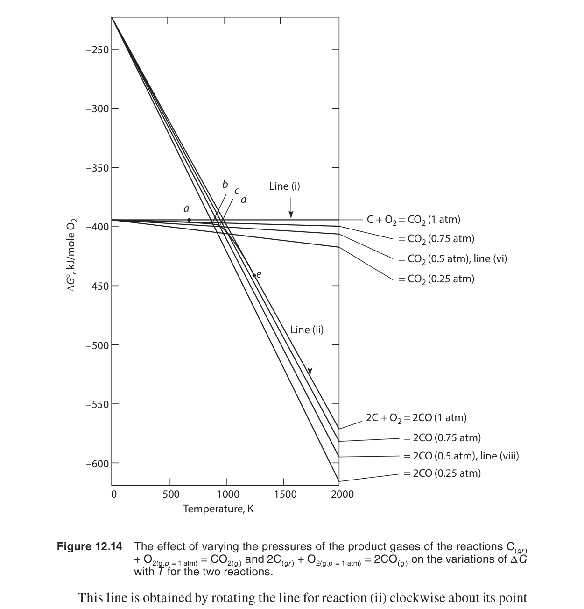
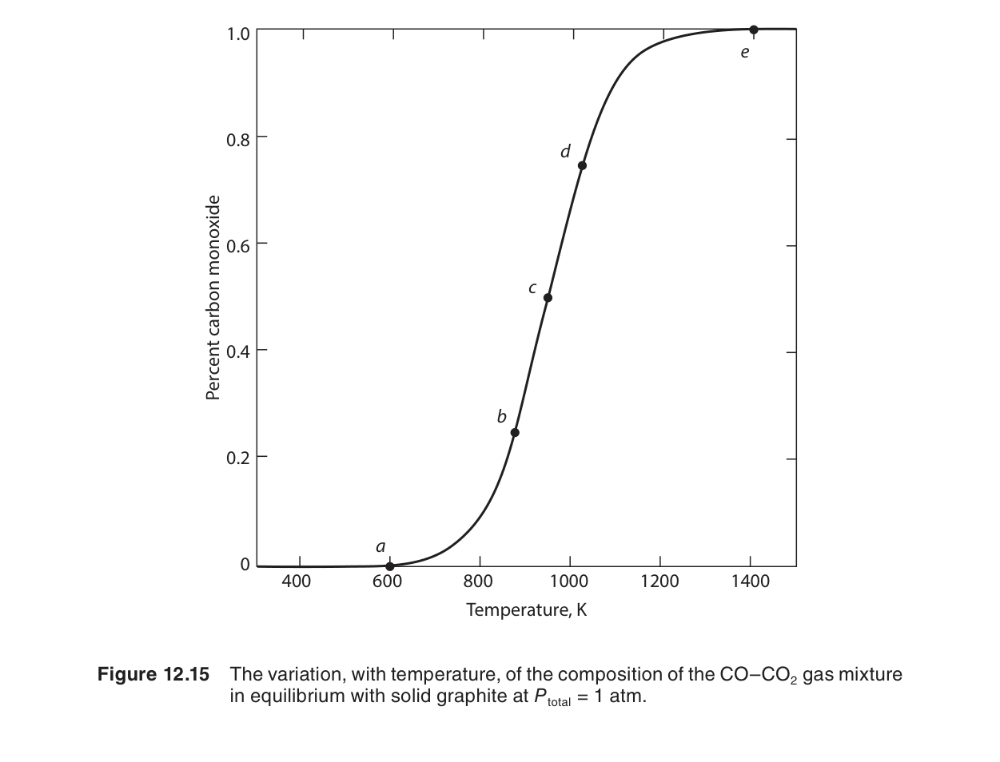
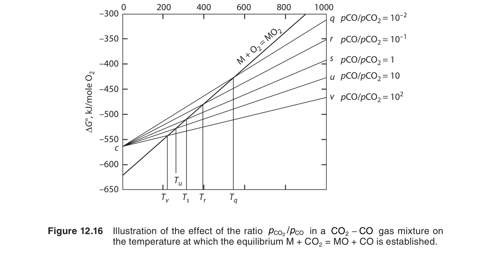
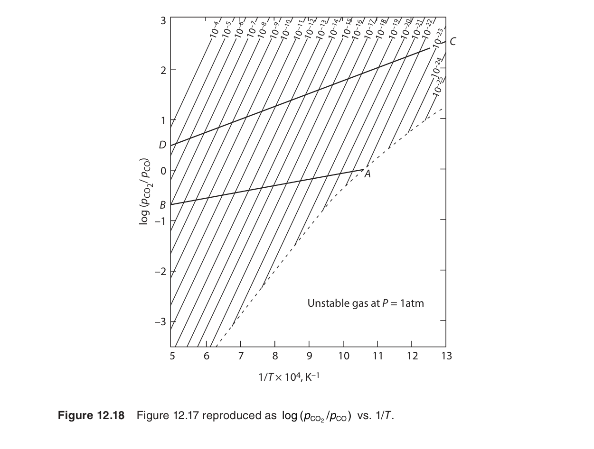
| 溫度 (°C) | $K = P_{\mathrm{CO}}^2/P_{\mathrm{CO}_2}$ | $P_{\mathrm{CO}}$（總壓 1 atm） | $P_{\mathrm{CO}_2}$（總壓 1 atm） | 主導氣體 |
|---|---|---|---|---|
| 400 | 0.001 | 0.03 | 0.97 | CO₂ |
| 500 | 0.02 | 0.12 | 0.88 | CO₂ |
| 600 | 0.3 | 0.40 | 0.60 | CO₂（略優勢） |
| 700 | 1.0 | 0.62 | 0.38 | 約略相等 |
| 800 | 10 | 0.91 | 0.09 | CO |
| 900 | 50 | 0.97 | 0.03 | CO |
| 1000 | 160 | 0.99 | 0.01 | CO |
▲ 表三：布多反應在不同溫度下的平衡常數與氣相組成（$P_{\text{total}} = 1$ atm，$a_{\mathrm{C}} = 1$）。注意在 700°C 附近為 CO 與 CO₂ 比例的翻轉點。
12.7 金屬–碳–氧平衡
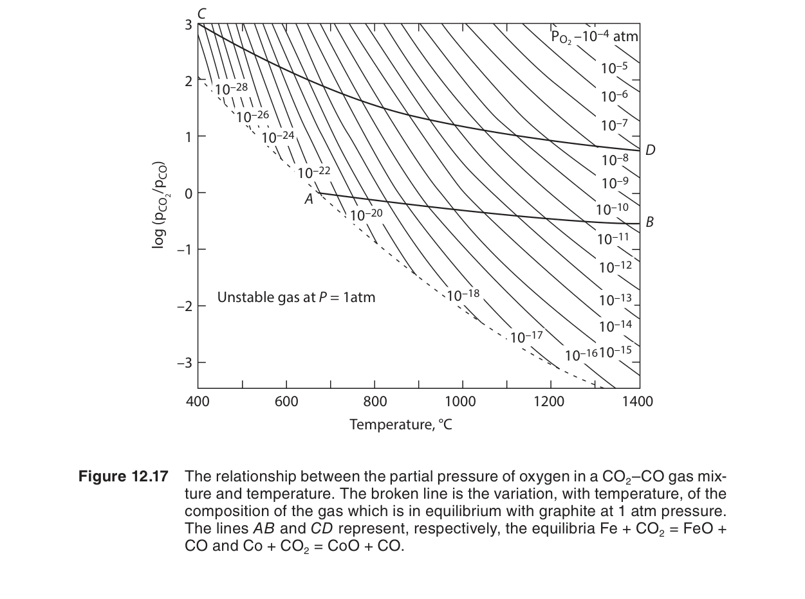
在前述各節中，我們分別討論了金屬-氧二元系統（金屬/氧化物平衡）與碳-氧二元系統（CO/CO₂ 平衡）。實務上的冶金系統幾乎都是金屬–碳–氧三元系統：金屬氧化物與碳共同存在於高溫反應器中，碳被氧化為 CO 或 CO₂，而金屬氧化物則被還原為金屬（或形成碳化物）。這三種元素之間的化學交互作用產生了豐富而複雜的相平衡行為。
Gaskell 在本節中引入了穩定域圖（stability diagram 或 predominance area diagram）的概念：以 $\log P_{\mathrm{CO}_2}$（或 $\log P_{\mathrm{O}_2}$）為橫軸，$\log P_{\mathrm{CO}}$ 為縱軸，在給定溫度下繪出各固態相（金屬、氧化物、碳化物，以及可能的碳酸鹽）的穩定區域。這些區域之間的分界線對應於兩相共存的平衡條件。例如，金屬 M 與其氧化物 MO 之間的分界線由反應 $\mathrm{M} + \frac{1}{2}\mathrm{O}_2 \rightleftharpoons \mathrm{MO}$ 的平衡條件決定，在 $\log P_{\mathrm{O}_2}$ 對 $\log P_{\mathrm{CO}}$ 的坐標中為一條水平線（因為該反應只涉及 O₂ 而不涉及 CO，$P_{\mathrm{O}_2}$ 為常數）。
氧化物與碳酸鹽之間的分界則由反應 $\mathrm{MO} + \mathrm{CO}_2 \rightleftharpoons \mathrm{MCO}_3$ 決定，在穩定域圖中通常為一條垂直線或斜線，取決於碳酸鹽分解反應中氣體莫耳數的變化。透過將金屬–氧、碳–氧、金屬–碳等各種可能的反應全部疊加在同一張二維圖上，我們可以一目了然地看出：在給定的溫度、$P_{\mathrm{CO}}$ 與 $P_{\mathrm{CO}_2}$（或 $P_{\mathrm{O}_2}$）條件下，哪一個固態相是熱力學穩定的。
以鐵–碳–氧系統為例，在 1000 K 的穩定域圖上，可以清楚劃分出 Fe（金屬鐵）、FeO（方鐵礦）、Fe₃O₄（磁鐵礦）、Fe₂O₃（赤鐵礦）以及 Fe₃C（滲碳體，cementite）各自的穩定區域。值得注意的是，Fe₃C 僅在低氧分壓（強還原性氣氛）且高碳活性的條件下穩定——這正對應於高爐爐腹（bosh）區域的操作條件。若氣氛的氧化性稍強，Fe₃C 將分解為 Fe 與 CO/CO₂。控制滲碳體的生成與分解，是調整鋼鐵產品碳含量（即從鑄鐵到低碳鋼的轉變）的熱力學基礎。
穩定域圖的另一個精彩應用是解釋「災難性滲碳」（metal dusting corrosion）——一種在高碳活性、中等溫度（400–800°C）環境中，鐵基合金因滲碳體形成與後續分解而導致的災難性材料劣化。從穩定域圖可以清楚看出，在該溫度–氣氛窗口內，Fe₃C 為穩定相；然而當局部碳活性因沉積而波動時，合金會在 Fe 與 Fe₃C 之間反覆循環，導致材料崩解為金屬粉末與碳粉的混合物。這再次說明了熱力學穩定域圖在預測材料服役行為中的不可或缺性。
氯腐蝕環境中的艾林漢圖應用
雖然本章聚焦於氧化反應，但艾林漢圖的方法論可以自然地擴展到其他氣–固反應系統。在垃圾焚化爐、生物質鍋爐以及某些化工製程中，高溫氯腐蝕是材料失效的主要原因。氯腐蝕的熱力學分析與氧化完全平行——只需將反應中的 O₂ 替換為 Cl₂ 即可。下圖展示了鐵的氯化反應艾林漢線，其解讀方式與氧化反應的艾林漢圖完全相同。
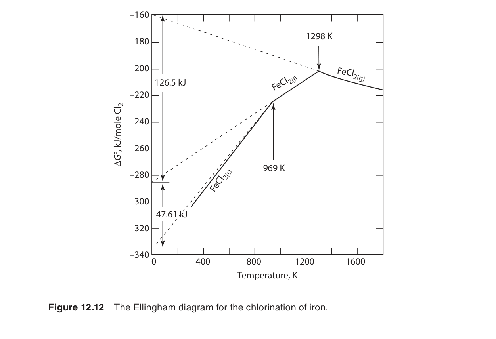
高爐煉鐵的熱力學全景
綜合本章所有概念，我們可以勾勒出高爐煉鐵的熱力學全景。高爐（blast furnace）是一個高達 30–40 公尺的豎式反應器，鐵礦石、焦炭與石灰石從頂部加入，熱風（預熱空氣）從底部鼓入。爐內沿高度方向形成了顯著的溫度梯度（從頂部的約 200°C 到底部的約 2000°C）與化學梯度。
在爐身（stack）上部（200–700°C），鐵礦石（主要為 Fe₂O₃）首先被 CO 還原為 Fe₃O₄，再進一步還原為 FeO。這兩個步驟的熱力學驅動力來自 CO/CO₂ 比例高於對應平衡值——布多平衡在此溫度區間仍以 CO₂ 為主，但上升的爐氣中含有大量來自下部區域的 CO，使局部 $P_{\mathrm{CO}}/P_{\mathrm{CO}_2}$ 比例遠高於平衡值，提供了還原所需的熱力學驅動力。
在爐腹（bosh）區域（700–1200°C），FeO 被固態碳直接還原：$\mathrm{FeO} + \mathrm{C} \rightarrow \mathrm{Fe} + \mathrm{CO}$。從艾林漢圖可知，C → CO 線與 FeO 線約在 710°C 相交——此溫度以上，碳可直接還原 FeO。在爐缸（hearth）區域（1200–2000°C），鐵熔化並滴落至爐底，同時發生滲碳反應（$\mathrm{3Fe} + \mathrm{C} \rightarrow \mathrm{Fe}_3\mathrm{C}$ 或 $\mathrm{3Fe} + \mathrm{2CO} \rightarrow \mathrm{Fe}_3\mathrm{C} + \mathrm{CO}_2$），生成含碳約 4–5 wt% 的液態生鐵。爐渣（主要為 CaO-SiO₂-Al₂O₃ 系）則浮在鐵水之上，起到吸收雜質（如硫、磷）與保護鐵水不被再氧化的雙重作用。
在這一完整的冶金過程中，艾林漢圖提供了選擇操作溫度的理論基礎，布多平衡解釋了爐內氣相組成的演化，穩定域圖則確保了鐵水與爐渣之間的正確相平衡。三者相輔相成，構成了一個完整的熱力學分析框架。現代高爐操作還結合了動力學模型、流體力學模擬與即時傳感器數據，但其核心的熱力學邏輯仍然植根於本章所介紹的這些基本概念。
計算範例：鐵氧化的完整熱力學分析
以下是一個詳細的逐步計算範例，展示如何將本章的各個概念整合應用。本範例旨在建立從基本熱力學數據出發，到最終的定量預測的完整思維鏈。
問題設定
考慮反應 $\mathrm{Fe}(s) + \frac{1}{2}\mathrm{O}_2(g) \rightleftharpoons \mathrm{FeO}(s)$。已知以下數據（298 K）：
| 物質 | $\Delta H^\circ_f$ (kJ/mol) | $S^\circ$ (J/K·mol) |
|---|---|---|
| Fe(s) | 0 | 27.3 |
| O₂(g) | 0 | 205.1 |
| FeO(s) | −272.0 | 60.8 |
Step 1：計算 $\Delta H^\circ_{298}$ 與 $\Delta S^\circ_{298}$
Step 2：寫出 $\Delta G^\circ(T)$ 的近似表達式（忽略 $\Delta C_p$）
注意此處 $\Delta S^\circ$ 為負值，因此 $-T\Delta S^\circ$ 項為正值，$\Delta G^\circ(T)$ 隨溫度升高而趨近於零（氧化物的穩定性降低）。
Step 3：計算特定溫度下的平衡氧分壓
在 1000 K 時：
平衡常數與 $\Delta G^\circ$ 的關係：$\Delta G^\circ = -RT\ln K$，其中 $K = 1/(P_{\mathrm{O}_2}/P^\circ)^{1/2}$。
這個極低的平衡氧分壓意味著：在 1000 K 時，只要氣氛中的氧分壓高於 $6.4 \times 10^{-22}$ atm，Fe 就會自發氧化為 FeO。這解釋了為何金屬鐵在幾乎任何含氧氣氛中都會形成氧化層——除非在極度還原性的高爐內部，或經過特殊的保護氣體處理。
Step 4：考慮 Fe 的 $\alpha \rightarrow \gamma$ 相變（1184 K）
若計算 1200 K 時的 $\Delta G^\circ$，必須考慮鐵在 1184 K 由 BCC ($\alpha$) 轉變為 FCC ($\gamma$) 的相變。$\gamma$-Fe 的標準熵為 32.7 J/K·mol（略高於 $\alpha$-Fe 的 27.3 J/K·mol，兩者在 298 K 的差值僅供參考；實際上需要考慮 $C_p$ 積分到相變溫度）。熔化熱為 $\Delta H_{\alpha\rightarrow\gamma} = 0.9$ kJ/mol，發生在 1184 K。因此 $\Delta S^\circ$ 在 1184 K 以上應以 $\gamma$-Fe 的 $S^\circ$ 取代 $\alpha$-Fe 的數值。這將使 $\Delta S^\circ$ 變得更負（因為產物 FeO 的熵不變，而反應物 $\gamma$-Fe 的熵更高），$\Delta G^\circ$ 線的斜率在 1184 K 以上略微增大。
章節總結
第十二章將前十一章建立的熱力學理論體系，聚焦應用於一類具有巨大工業價值的反應——純凝態相與氣體之間的反應。核心結論可以歸納為以下幾點：
1. 純凝態相的簡化力量：當反應涉及純固體或純液體時（$a = 1$），平衡常數簡化為僅與氣體分壓相關，$\Delta G^\circ$ 直接給出平衡氧分壓 $P_{\mathrm{O}_2}^{\text{eq}}$。每種氧化物都有一個獨特的特徵分解氧壓，其數值愈低表示氧化物愈穩定。這個簡單的關係式是整章所有後續分析的出發點。
2. 艾林漢圖的判讀法則：在 $\Delta G^\circ$–$T$ 圖上，位置愈低的線對應愈穩定的氧化物。斜率由 $-\Delta S^\circ$ 決定——大多數金屬氧化反應因消耗氧氣（熵減少）而呈現正斜率；碳氧化為 CO 的反應因氣體莫耳數增加而呈現罕見的負斜率，使碳在高溫下成為無與倫比的還原劑。位於下方的金屬可以將位於上方的金屬從其氧化物中還原出來。
3. 相變的訊號：每當金屬或氧化物發生熔化、汽化或固態相變，艾林漢線便出現斜率轉折。轉折的大小由相變熵決定——金屬熔化使斜率增大（線更陡），氧化物熔化使斜率減小（線更平緩）。在進行定量計算時，必須分段使用對應相態的熱力學數據。
4. 布多反應與氣氛控制：$\mathrm{C} + \mathrm{CO}_2 \rightleftharpoons 2\mathrm{CO}$ 的平衡決定了冶金爐氣中 CO/CO₂ 的比例。低溫以 CO₂ 為主，高溫以 CO 為主，翻轉點約在 700°C。透過控制溫度與氣體流量，可以精確調節爐內的氧化還原電位，實現選擇性氧化或還原。
5. 三元穩定域圖：將金屬–氧、碳–氧、金屬–碳的所有可能反應整合在一張二維圖（$\log P_{\mathrm{O}_2}$ 對 $\log P_{\mathrm{CO}}$ 或 $\log P_{\mathrm{CO}_2}$ 對 $\log P_{\mathrm{CO}}$）上，即可獲得各固態相（金屬、氧化物、碳化物、碳酸鹽）的穩定區域。這張圖為冶金與材料工程師提供了一個全面的「操作地圖」，指導著從高爐煉鐵到不銹鋼精煉、從 DRI 製程到腐蝕防護的各種工業實踐。
• 第六章（§6.5–6.7）：熱容積分與克希荷夫定律的詳細推導。
• 第十章（§10.1–10.5）：二元相圖，特別是 Fe-O 與 Fe-C 系統。
• 第十一章（§11.1–11.6）：氣相反應平衡常數、van't Hoff 方程。
• 第十三章（預覽）：溶液熱力學與活性——當凝態相不再是純物質而是溶液時，$a \neq 1$，本章的方法如何推廣。
• 參考書目：Ellingham, H.J.T. (1944), J. Soc. Chem. Ind., 63, 125–133.（原始艾林漢圖文獻）
• 現代資源：NIST-JANAF Thermochemical Tables、FactSage 與 Thermo-Calc 軟體中的艾林漢模組。
—— 第十二章結束 · 全章共涵蓋 pp. 434–487 ——